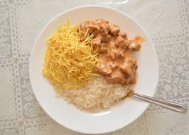

O strogonoff de frango é um prato amado por todos e muito fácil de ser preparado! A combinação da carne de frango suculenta com o molho cremoso deixa qualquer um salivando só de pensar. Criado originalmente na Rússia, a versão brasileira tem algumas diferenças bem particulares.

Tempo de preparo: 1h
Porções: 10 Porções
Ingredientes:
3 Peitos de frango cortados em cubos
Sal a gosto
1 Cebola Picada
1 Colher de Manteiga
1/3 Copo de Mostarda
1 Copo de creme de leite
1 Dente de Alho Picado
Pimenta do Reino a Gosto
2 Colheres (Sopa) de Maionese
1/2 Copo de ketchup
1 Copo de champignon
Batata palha a gosto
Modo de Preparo:
Em uma panela, misture o frango, o alho, a maionese, o sal e a pimenta.
Em uma frigideira grande, derreta a manteiga e doure a cebola.
Junte o frango temperado até que esteja dourado.
Adicione os cogumelos, o ketchup e a mostarda.
Incorpore o creme de leite e retire do fogo antes de ferver.